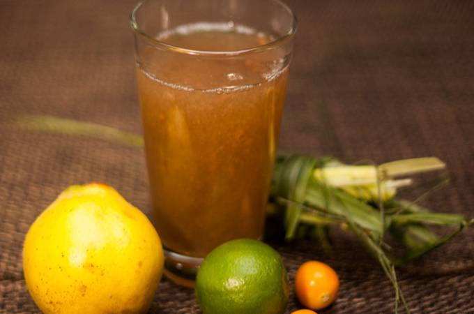

Emoliente

Emoliente is a traditional Peruvian drink and is known for its medicinal properties.
Ingredients
- Dried horse tail
- Dried grass
- Flax seeds
- Llanten (plantain leaf)
- Chopped quince (optional)
- Water
- Sugar or honey
- Lemon
Steps
- Boil all the ingredients in a large pan filled with water, for half an hour.
- Strain, sweeten, and add lemon juice to taste.